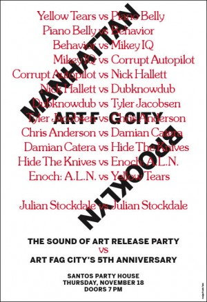
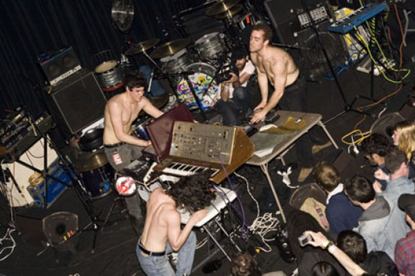
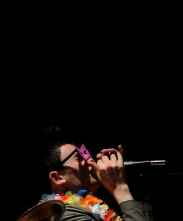
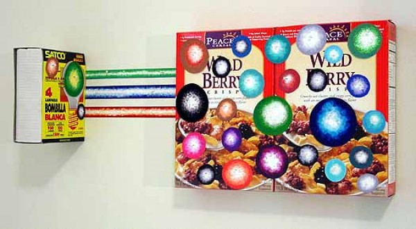

-
Art Sounds: Interview with Paddy Johnson
by Idiom November 18, 2010
Paddy Johnson is Art Fag City, and needs little else in the way of introduction. The preeminent blogger for contemporary art, Johnson was recently nominated for Critic of The Year at the upcoming 2010 Art Awards. Tonight she debuts The Sound of Art, a limited edition LP and battle record at Santos Party House, where the above sporting equipment will be at auction while DJ’s sort out their differences. Stephen Squibb talked with Johnson about the state of online art writing, the relentless pursuit of ideas, and the uncanny valley of the electrocuted squirrel.
Idiom: So what is The Sound of Art? Where did the idea originate?
Paddy Johnson: The Sound of Art is a DJ battle record filled with the sounds of art installations, videos, and performance art heard all across the city over the last five years.
The idea came to me while in Venice. I was looking at a lot of art, and it seemed to me that it had a very distinctive sound. I wanted to make a record of those sounds, so I did.
Idiom: We don’t usually think of art as having a specific sound. As you pursued the record, did any trends emerge? How would you characterize the results?
PJ: Sounds that I thought sounded too much like another were largely eliminated, as they tended to indicate a weakness in the sound itself. I’m not sure there were trends, but certainly there were thematic threads we pulled out from the sounds. Matt Madly, at Think Tank Studio, the record’s producer, built-in a reflection on mixing culture from within the record, a move I thought was really smart. Moyra Davey’s sound clip — the first track on side A (Manhattan) is a monologue about wanting to be surrounded by an excess of books — “to not even have a clear idea of what I own”. The spark, she says, often comes when she least expects is. Different takes on that position play out repeatedly on the record.

Idiom: And it is a record? As in vinyl? Can you talk about this choice of medium? Will it be available in any other form?
PJ: It is a limited edition LP. I will be releasing a single MP3 to kickstarter donors, but past that it won’t be available in any other form, unless someone decides to put the whole thing online. I do hope that people don’t do this though, since the project is also a fundraiser for the blog.
I chose to make an editioned album for two reasons. One, the blog is a reflection of my experience online and off, so I thought it was important for my own production to realize that reality literally. Also, I wanted art to occur not just at the beginning (with the artists) and end (with the musicians), but in the production stage as well, which is why I used a producer who came up with a track order and cut the sounds into usable samples. Matt really did a great job for us.
Idiom: There is a lot of discussion these days about how cultural producers – and writers in particular – should try and support themselves post-digital revolution. As someone who has confronted these issues from the beginning, can you reflect a little on how you’ve arrived at where you are? Is the fundraising/grants/donations model one you would recommend to others?
PJ: Well, it’s a balance, because of course you can easily spend your days doing nothing else but fundraising and discussing ad strategy.
For me, I’ve found the better I become at imparting my own sensibility in my fundraising projects and even the ad program (PBR – Nectar Ads wants you as a sponsor), the more successful these projects are.
This is one reason I’ve enjoyed The Sound of Art so much. There’s so many different angles to the production I’m able to touch upon, from working with artists, to promoting the project, and now, co-ordinating bands and a comedian. I can’t tell you how excited I am about watching dubknowdub, Nick Hallett, Piano Belly, Mikey IQ, our headliner Yellow Tears and others work with the record today, mostly because I have no idea what’s going to happen.
Idiom: I think its interesting that you’ve created a kind of raw material for this, something that can be used and re-used to make other work. Can you speak a little about what you see as the role of internet art writing in the future? Its sort of a tricky positioning, right? There remains a kind of outsider sensibility online, it seems, or is this just the old journalism/ivory tower split remapped for a digital age?
PJ: In a lot of ways the album draws upon the sensibility of a blog. That I’m constantly responding to what’s out there with my own thoughts — the record is just another version of that. The only difference here is that I’m offering the tools and forum, not the response itself.
As for the future of internet art writing, I think the idea that there are outsiders and insiders is going to shift. The market has a niche for everyone. The real question is how we get beyond the basic mechanisms of the market so we can evaluate and debate ideas that really matter. But that’s a problem we’ve been struggling with for years.

Idiom: I agree about getting beyond market mechanisms. What are some ideas that you think are significant that either have, or haven’t gotten the attention they deserve? What’s changed, idea-wise, over your tenure at AFC?
PJ: I’ve always been very interested in the way artists respond to the web, and there’s certainly not enough work being done in that field. Probably one of the most valuable posts I ever wrote on the blog was a summary of the Net Aesthetics 2.0 panel discussion organized in 2006 and 2008 by Lauren Cornell, Executive Director of Rhizome and Adjunct Curator for the New Museum. There I track the different responses to the web over the course of two years on such subjects as the web as a communication tool, how artists identify art on the web, the importance of beauty, and the wisdom of crowds. Now, the invited artists were different in 2006 vs 2008, but the change in the way they use the web is nonetheless marked. Four years ago no one was even thinking about social networking and crowd sourcing as a means of collecting information to create work.
Still, one problem that I think has really persisted has been the work involved in figuring out how to identify art on the web, let alone talk about it. There’s been some pretty heavy work on the blog devoted to tackling that problem. I’ve hosted long conversations about how to identify art on a surf club‘s blog, multiple discussions about the artistic merit of Rashaad Newsome’s youtube-y video The Conductor, and most recently, Will Brand, my current intern, wrote a post discussing the difference between art and non-art videos on the web. The “uncanny valley” is his term for the point at which a video resembles both Youtube clips and video art so closely that the viewer becomes uncomfortable.
Idiom: Are there other writers or sites, online or off, whose work has caught your eye? Either for speaking to these issues or otherwise?
PJ: I follow artists more than anyone else. On the net art side of things I keep up with Tom Moody, Hypothete, Sally McKay and Lorna Mills. I also try to read whatever Ed Halter writes.
I write for Art Agenda, so I’m biased, but I try to read all the reviews they publish. I think they are really considered as is Greg.org. And though they cover an awful lot, I especially enjoy the internet news connected to art that comes out of Hyperallergic. Kyle Chayka and Hrag Vartanian do a really great job keeping up on the scene, and there’s a lot going on so it’s not easy!
I’m a little sad that Barry Hoggard and James Wagner update their blogs less frequently. They are very good.
Idiom: Agreed. So what are your plans for the future? Can we count on more of these types of innovative fundraisers?
PJ: I don’t know if fundraisers on the scale of The Sound of Art will be replicated on a regular basis simply because of the amount of work it takes to pull a project like this off. I’ve rarely had an evening off since I started, let alone a weekend. It’s been worth it, of course, but it’s not the kind of workload that anyone can sustain long term. There will be the standard end of the year fundraiser though, as a week of successful fundraising can support the blog for as long as six months.
As for the future of AFC, if there is a publisher out there who wants to pay me to do exactly what I’m doing now then of course I’m interested. But that doesn’t change the direction of the blog, it simply ports it elsewhere. As it stands, AFC is here to stay.

1 Comment
Reader: January 12, 2011 | updownacross
[...] Interview with Art Fag City, aka Paddy Johnson, discussing the DJ battle record, Sound of Art. “…the better I [...]